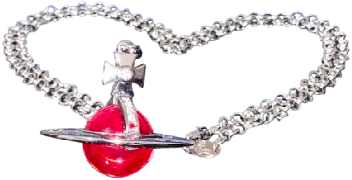

Small Mayfair Orb Pendant (Platinum x Red)
2025.01.07

The classic orb pendant is a resin piece ornamented in crystals wearing a ring frame composed in brass, engraved with Westwood's name as well as the street its sold from. The chain is linked onto a stout, stoned cross and uses the brand's original lobster clasp design to link.
This marks my first orb, and I received it in red as opposed to the classic clear variation as it felt more intimate to have something in my color.
Vivienne Westwood's jewelry receives a lot of misaimed criticism for being brass and most people invest in scarcer or hearty metals. The reality is that the investment goes into the piece's commission as each piece is handcrafted in London by designers. Like any artwork you should be taking proper care of it and ensure it lives a long life regardless of the materials the artist decided to use. You still need to polish silver and steel, its just that brass needs more attention.
With the jewelry I own I always store them in a plastic zip-top bag and inside their dustbags when I'm not using it and I'll polish them all the time. Even then I wouldn't have these pieces in any other metal since if treated right, brass can take on a wonderful, aged, antique gold look. I've been wearing this orb everyday and its yet to tarnish.
Anyway the brand heritage also just specializes in plated jewelry which is why they haven't switched to stainless steel, but consumer culture often leads people into believing they shouldn't take care of their shit or that designer brass can't be worn to the casket.
From how I see it Vivienne Westwood's work was created with "fit" in mind, and is bought to be modified. The orb's simplicity and proclivities to change is part of the responsibility. The brand has grown out of its "punk" roots for way longer than I've been interested in it (as well as having gained a homophobic profit hound for a CEO). Still, the orb was created to desecrate the sanctity of "luxury branding" and it still manages to age with grace.


")